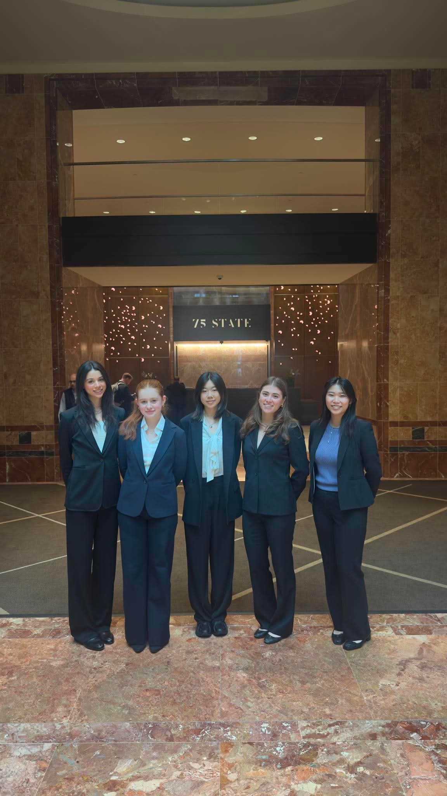

Independent consulting, at least the kind I’ve been doing, is a strange exercise in selective memory. You spend months immersed in a problem — its texture, its stakes, its surprising technical turns — and then you close the chapter and mostly keep it to yourself. What I can offer here isn’t a case study. It’s more of a field note: evidence that the work happened, and a few honest reflections on what each engagement taught me.
Over the past stretch I’ve taken on four projects, each in a different industry, each at a genuinely early moment in its respective field. They span robotics, AI, aerospace, and banking. The common thread, as far as I can tell, is that every client was trying to do something that hadn’t been done before. Due to NDAs, I cannot describe the work done here in detail, but please contact me to talk further!
Project 01 · Robotics — Automation at the frontier of what we eat
Cellular agriculture is one of those areas where the biology and the engineering are both unsolved at the same time. I contributed to the robotic systems side of this: the machinery that has to handle extraordinarily sensitive biological processes with the kind of precision and repeatability that a lab environment demands. The margin for error is low. The upside, if it works, is significant.
Project 02 · Agentic AI — Putting AI to work on real investment data
Real-estate investment firms sit on enormous amounts of messy, heterogeneous data. I helped design and develop infrastructure for pipelines that reason over this data and take sequential action. The challenge isn’t really the AI; it’s getting the data clean and trustworthy enough that the AI’s outputs can be acted on with confidence.
Project 03 · Aerospace — Market analysis for an early-stage aerospace company
A startup entering aerospace needs to understand not just whether a market exists, but whether it will exist at the pace and scale required to build a real business. I conducted structured market analysis working through competitive landscape, demand signals, regulatory dynamics, and timing risk.
Project 04 · Financial Services · Lead — AI at scale inside a major commercial bank
This is the engagement I led. Taking AI seriously inside a large financial institution is a different kind of problem than building at a startup — the technical bar is high, but the organizational and compliance dimensions are equally demanding. I worked with stakeholders across functions to scope, develop, and drive adoption of AI tooling in an environment where trust, auditability, and risk management aren’t optional.
Remarks:
To be honest, I never really wanted to do Consulting as a career. As a freshman who had no clue what I wanted to do, I joined the group, really, to explore the many possibilities in our rapidly changing, tech-focused world. After two years, I can’t really say I have completely figured out what I wanted to do now; on the contrary, these projects only showed me how much I have yet to explore. The undeniable common thread, however, is that we are only at the beginning of a technical revolution, no matter in what industry.
